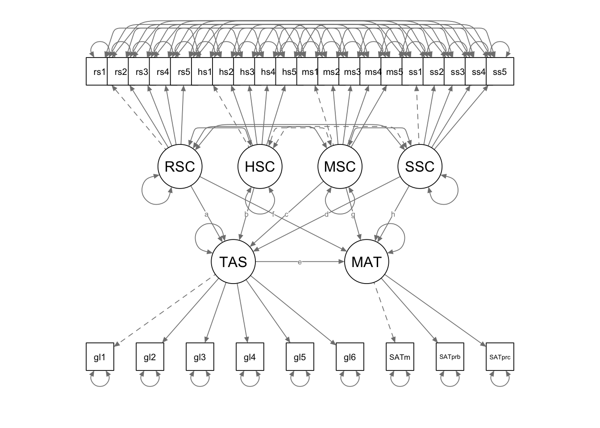
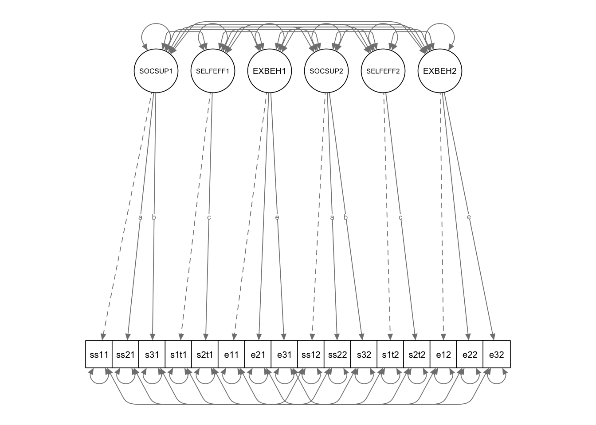
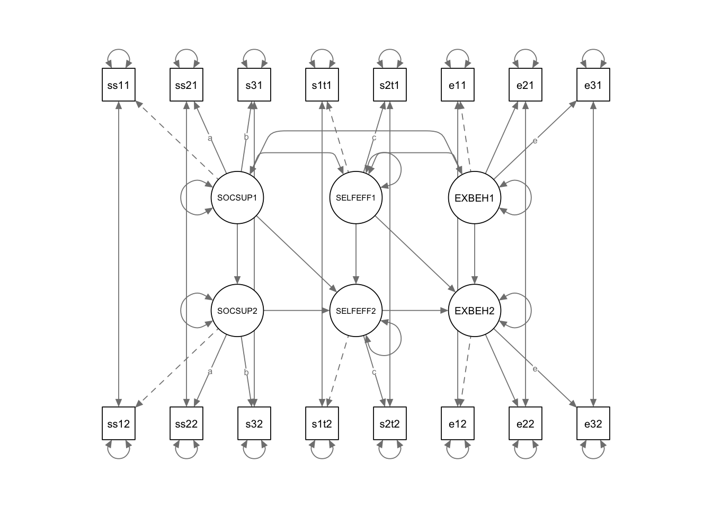

In this tutorial, we are going to use lavaan for latent variable path analysis.
## Warning in lav_data_full(data = data, group = group, cluster = cluster, : lavaan WARNING:
## some observed variances are (at least) a factor 1000 times larger than others; use
## varTable(fit) to investigate
library(lavaan)
setwd(mypath)
dat <- read.table("proficiencyraw-female.csv", header = F, sep = ",")
colnames(dat) <- c(paste0("goals",1:6),
paste0("rsc",1:5),
paste0("hsc",1:5),
paste0("msc",1:5),
paste0("ssc",1:5),
"SATvoc",
"SATcomp",
"SATlang",
"SATmath",
"SATprob",
"SATproc")Here we need to label the path coefficients and define the indirect effects using those labels.
lvpa.Model <- '
# measurement model
RSC =~ rsc1 + rsc2 + rsc3 + rsc4 + rsc5
HSC =~ hsc1 + hsc2 + hsc3 + hsc4 + hsc5
MSC =~ msc1 + msc2 + msc3 + msc4 + msc5
SSC =~ ssc1 + ssc2 + ssc3 + ssc4 + ssc5
TASKGOAL =~ goals1 + goals2 + goals3 + goals4 + goals5 + goals6
MATHPROF =~ SATmath + SATprob + SATproc
HSC ~~ 0*MSC
HSC ~~ 0*SSC
# residual covariances
rsc1~~hsc1+msc1+ssc1
rsc2~~hsc2+msc2+ssc2
rsc3~~hsc3+msc3+ssc3
rsc4~~hsc4+msc4+ssc4
rsc5~~hsc5+msc5+ssc5
hsc1~~msc1+ssc1
hsc2~~msc2+ssc2
hsc3~~msc3+ssc3
hsc4~~msc4+ssc4
hsc5~~msc5+ssc5
msc1~~ssc1
msc2~~ssc2
msc3~~ssc3
msc4~~ssc4
msc5~~ssc5
# structural model for the latent variables
TASKGOAL ~ a*RSC + b*HSC + c*MSC + d*SSC
MATHPROF ~ e*TASKGOAL + f*RSC + g*MSC + h*SSC
# indirect effects
MTHindRSC := e*a
MTHindHSC := e*b
MTHindMSC := e*c
MTHindSSC := e*d
'Fit the model to the data with bootstrapped indirect effects.
lvpa.Fit <- sem(lvpa.Model, data = dat, se = "bootstrap", bootstrap = 5000)You could print out the bootstrapped parameter estimates and confidence intervals using the parameterEstimates function. To print out the standardized solutions, you could use the standardizedSolution function.
summary(lvpa.Fit, fit.measures = T, standardized = T)## lavaan 0.6-8 ended normally after 127 iterations
##
## Estimator ML
## Optimization method NLMINB
## Number of model parameters 100
##
## Number of observations 1000
##
## Model Test User Model:
##
## Test statistic 387.064
## Degrees of freedom 335
## P-value (Chi-square) 0.026
##
## Model Test Baseline Model:
##
## Test statistic 16011.747
## Degrees of freedom 406
## P-value 0.000
##
## User Model versus Baseline Model:
##
## Comparative Fit Index (CFI) 0.997
## Tucker-Lewis Index (TLI) 0.996
##
## Loglikelihood and Information Criteria:
##
## Loglikelihood user model (H0) -51499.857
## Loglikelihood unrestricted model (H1) -51306.326
##
## Akaike (AIC) 103199.715
## Bayesian (BIC) 103690.490
## Sample-size adjusted Bayesian (BIC) 103372.885
##
## Root Mean Square Error of Approximation:
##
## RMSEA 0.012
## 90 Percent confidence interval - lower 0.005
## 90 Percent confidence interval - upper 0.018
## P-value RMSEA <= 0.05 1.000
##
## Standardized Root Mean Square Residual:
##
## SRMR 0.032
##
## Parameter Estimates:
##
## Standard errors Standard
## Information Expected
## Information saturated (h1) model Structured
##
## Latent Variables:
## Estimate Std.Err z-value P(>|z|) Std.lv Std.all
## RSC =~
## rsc1 1.000 0.820 0.646
## rsc2 1.245 0.064 19.435 0.000 1.021 0.761
## rsc3 1.003 0.059 17.088 0.000 0.823 0.644
## rsc4 1.205 0.061 19.767 0.000 0.988 0.786
## rsc5 1.043 0.060 17.480 0.000 0.856 0.659
## HSC =~
## hsc1 1.000 0.953 0.700
## hsc2 1.067 0.047 22.721 0.000 1.016 0.803
## hsc3 0.964 0.048 20.069 0.000 0.919 0.699
## hsc4 0.880 0.047 18.809 0.000 0.839 0.649
## hsc5 1.146 0.050 23.008 0.000 1.092 0.820
## MSC =~
## msc1 1.000 1.138 0.817
## msc2 0.942 0.032 29.685 0.000 1.072 0.820
## msc3 0.900 0.032 28.092 0.000 1.024 0.788
## msc4 0.962 0.034 28.513 0.000 1.095 0.797
## msc5 0.894 0.032 27.586 0.000 1.017 0.775
## SSC =~
## ssc1 1.000 1.168 0.841
## ssc2 0.985 0.029 33.902 0.000 1.151 0.867
## ssc3 0.820 0.029 28.147 0.000 0.959 0.766
## ssc4 0.941 0.031 30.051 0.000 1.100 0.800
## ssc5 0.840 0.031 27.250 0.000 0.981 0.745
## TASKGOAL =~
## goals1 1.000 0.829 0.619
## goals2 1.186 0.061 19.370 0.000 0.983 0.767
## goals3 1.048 0.059 17.808 0.000 0.868 0.683
## goals4 0.992 0.058 17.216 0.000 0.822 0.654
## goals5 1.382 0.067 20.566 0.000 1.145 0.840
## goals6 1.270 0.065 19.613 0.000 1.052 0.781
## MATHPROF =~
## SATmath 1.000 33.631 0.901
## SATprob 0.915 0.027 33.719 0.000 30.786 0.821
## SATproc 1.072 0.034 31.957 0.000 36.038 0.795
##
## Regressions:
## Estimate Std.Err z-value P(>|z|) Std.lv Std.all
## TASKGOAL ~
## RSC (a) 0.316 0.043 7.369 0.000 0.313 0.313
## HSC (b) 0.124 0.033 3.770 0.000 0.143 0.143
## MSC (c) 0.196 0.032 6.106 0.000 0.270 0.270
## SSC (d) 0.161 0.030 5.282 0.000 0.227 0.227
## MATHPROF ~
## TASKGOAL (e) 13.294 1.243 10.695 0.000 0.328 0.328
## RSC (f) 1.573 1.063 1.481 0.139 0.038 0.038
## MSC (g) 14.021 0.968 14.478 0.000 0.475 0.475
## SSC (h) 8.159 0.876 9.312 0.000 0.283 0.283
##
## Covariances:
## Estimate Std.Err z-value P(>|z|) Std.lv Std.all
## HSC ~~
## MSC 0.000 0.000 0.000
## SSC 0.000 0.000 0.000
## .rsc1 ~~
## .hsc1 0.121 0.034 3.562 0.000 0.121 0.129
## .msc1 -0.024 0.029 -0.847 0.397 -0.024 -0.031
## .ssc1 0.071 0.028 2.566 0.010 0.071 0.097
## .rsc2 ~~
## .hsc2 0.122 0.027 4.466 0.000 0.122 0.187
## .msc2 0.018 0.026 0.706 0.480 0.018 0.028
## .ssc2 0.036 0.024 1.497 0.134 0.036 0.062
## .rsc3 ~~
## .hsc3 0.094 0.033 2.837 0.005 0.094 0.102
## .msc3 0.029 0.028 1.021 0.307 0.029 0.037
## .ssc3 0.044 0.028 1.574 0.115 0.044 0.056
## .rsc4 ~~
## .hsc4 0.087 0.030 2.923 0.003 0.087 0.113
## .msc4 0.015 0.026 0.595 0.552 0.015 0.024
## .ssc4 0.018 0.026 0.695 0.487 0.018 0.028
## .rsc5 ~~
## .hsc5 0.096 0.030 3.211 0.001 0.096 0.128
## .msc5 0.059 0.029 2.004 0.045 0.059 0.073
## .ssc5 0.120 0.031 3.902 0.000 0.120 0.140
## .hsc1 ~~
## .msc1 0.043 0.029 1.483 0.138 0.043 0.056
## .ssc1 0.060 0.028 2.160 0.031 0.060 0.082
## .hsc2 ~~
## .msc2 0.037 0.023 1.609 0.108 0.037 0.065
## .ssc2 -0.006 0.021 -0.291 0.771 -0.006 -0.012
## .hsc3 ~~
## .msc3 -0.026 0.028 -0.931 0.352 -0.026 -0.034
## .ssc3 0.039 0.027 1.443 0.149 0.039 0.052
## .hsc4 ~~
## .msc4 0.055 0.030 1.846 0.065 0.055 0.067
## .ssc4 0.097 0.030 3.271 0.001 0.097 0.119
## .hsc5 ~~
## .msc5 0.018 0.025 0.706 0.480 0.018 0.028
## .ssc5 0.014 0.026 0.545 0.586 0.014 0.021
## .msc1 ~~
## .ssc1 0.053 0.024 2.211 0.027 0.053 0.087
## .msc2 ~~
## .ssc2 0.050 0.020 2.452 0.014 0.050 0.101
## .msc3 ~~
## .ssc3 0.039 0.024 1.663 0.096 0.039 0.061
## .msc4 ~~
## .ssc4 0.025 0.026 0.980 0.327 0.025 0.037
## .msc5 ~~
## .ssc5 0.121 0.027 4.571 0.000 0.121 0.167
## RSC ~~
## HSC 0.369 0.037 10.076 0.000 0.472 0.472
## MSC -0.173 0.032 -5.346 0.000 -0.185 -0.185
## SSC -0.133 0.032 -4.132 0.000 -0.139 -0.139
## MSC ~~
## SSC 0.835 0.059 14.154 0.000 0.628 0.628
##
## Variances:
## Estimate Std.Err z-value P(>|z|) Std.lv Std.all
## .rsc1 0.937 0.048 19.421 0.000 0.937 0.582
## .rsc2 0.758 0.046 16.640 0.000 0.758 0.421
## .rsc3 0.954 0.049 19.446 0.000 0.954 0.585
## .rsc4 0.603 0.039 15.626 0.000 0.603 0.382
## .rsc5 0.954 0.050 19.195 0.000 0.954 0.566
## .hsc1 0.944 0.049 19.083 0.000 0.944 0.510
## .hsc2 0.568 0.035 16.056 0.000 0.568 0.355
## .hsc3 0.883 0.046 19.097 0.000 0.883 0.511
## .hsc4 0.968 0.049 19.887 0.000 0.968 0.579
## .hsc5 0.583 0.038 15.275 0.000 0.583 0.328
## .msc1 0.645 0.036 17.910 0.000 0.645 0.333
## .msc2 0.561 0.032 17.814 0.000 0.561 0.328
## .msc3 0.640 0.034 18.726 0.000 0.640 0.379
## .msc4 0.690 0.037 18.506 0.000 0.690 0.365
## .msc5 0.686 0.036 19.026 0.000 0.686 0.399
## .ssc1 0.565 0.033 17.210 0.000 0.565 0.293
## .ssc2 0.438 0.028 15.916 0.000 0.438 0.248
## .ssc3 0.649 0.033 19.380 0.000 0.649 0.414
## .ssc4 0.682 0.037 18.607 0.000 0.682 0.361
## .ssc5 0.774 0.039 19.751 0.000 0.774 0.446
## .goals1 1.105 0.053 20.676 0.000 1.105 0.617
## .goals2 0.677 0.037 18.444 0.000 0.677 0.412
## .goals3 0.861 0.043 19.979 0.000 0.861 0.533
## .goals4 0.907 0.045 20.335 0.000 0.907 0.573
## .goals5 0.548 0.035 15.770 0.000 0.548 0.295
## .goals6 0.710 0.039 18.067 0.000 0.710 0.391
## .SATmath 260.998 20.641 12.645 0.000 260.998 0.187
## .SATprob 459.024 25.912 17.715 0.000 459.024 0.326
## .SATproc 753.719 40.680 18.528 0.000 753.719 0.367
## RSC 0.673 0.063 10.728 0.000 1.000 1.000
## HSC 0.908 0.075 12.054 0.000 1.000 1.000
## MSC 1.295 0.084 15.332 0.000 1.000 1.000
## SSC 1.365 0.085 16.093 0.000 1.000 1.000
## .TASKGOAL 0.473 0.047 10.060 0.000 0.689 0.689
## .MATHPROF 275.336 23.232 11.852 0.000 0.243 0.243
##
## Defined Parameters:
## Estimate Std.Err z-value P(>|z|) Std.lv Std.all
## MTHindRSC 4.205 0.641 6.564 0.000 0.103 0.103
## MTHindHSC 1.651 0.455 3.628 0.000 0.047 0.047
## MTHindMSC 2.612 0.456 5.727 0.000 0.088 0.088
## MTHindSSC 2.139 0.434 4.922 0.000 0.074 0.074# parameterEstimates(lvpa.Fit, ci = T, standardized = T)
standardizedSolution(lvpa.Fit)## lhs op rhs est.std se z pvalue ci.lower ci.upper
## 1 RSC =~ rsc1 0.646 0.023 28.534 0.000 0.602 0.691
## 2 RSC =~ rsc2 0.761 0.019 40.454 0.000 0.724 0.798
## 3 RSC =~ rsc3 0.644 0.023 27.633 0.000 0.599 0.690
## 4 RSC =~ rsc4 0.786 0.018 43.985 0.000 0.751 0.821
## 5 RSC =~ rsc5 0.659 0.023 29.002 0.000 0.614 0.703
## 6 HSC =~ hsc1 0.700 0.019 36.457 0.000 0.663 0.738
## 7 HSC =~ hsc2 0.803 0.017 48.420 0.000 0.771 0.836
## 8 HSC =~ hsc3 0.699 0.021 33.981 0.000 0.659 0.739
## 9 HSC =~ hsc4 0.649 0.023 28.614 0.000 0.604 0.693
## 10 HSC =~ hsc5 0.820 0.015 53.671 0.000 0.790 0.849
## 11 MSC =~ msc1 0.817 0.013 61.214 0.000 0.791 0.843
## 12 MSC =~ msc2 0.820 0.016 50.741 0.000 0.788 0.851
## 13 MSC =~ msc3 0.788 0.018 44.723 0.000 0.754 0.823
## 14 MSC =~ msc4 0.797 0.016 49.227 0.000 0.765 0.828
## 15 MSC =~ msc5 0.775 0.018 43.015 0.000 0.740 0.811
## 16 SSC =~ ssc1 0.841 0.013 66.927 0.000 0.816 0.866
## 17 SSC =~ ssc2 0.867 0.014 61.689 0.000 0.839 0.895
## 18 SSC =~ ssc3 0.766 0.020 38.879 0.000 0.727 0.804
## 19 SSC =~ ssc4 0.800 0.016 49.202 0.000 0.768 0.831
## 20 SSC =~ ssc5 0.745 0.020 37.880 0.000 0.706 0.783
## 21 TASKGOAL =~ goals1 0.619 0.026 24.039 0.000 0.569 0.670
## 22 TASKGOAL =~ goals2 0.767 0.020 37.554 0.000 0.727 0.807
## 23 TASKGOAL =~ goals3 0.683 0.024 28.168 0.000 0.636 0.731
## 24 TASKGOAL =~ goals4 0.654 0.025 25.689 0.000 0.604 0.703
## 25 TASKGOAL =~ goals5 0.840 0.016 51.336 0.000 0.808 0.872
## 26 TASKGOAL =~ goals6 0.781 0.019 40.230 0.000 0.743 0.819
## 27 MATHPROF =~ SATmath 0.901 0.009 94.935 0.000 0.883 0.920
## 28 MATHPROF =~ SATprob 0.821 0.016 49.787 0.000 0.788 0.853
## 29 MATHPROF =~ SATproc 0.795 0.016 48.453 0.000 0.763 0.828
## 30 HSC ~~ MSC 0.000 0.000 NA NA 0.000 0.000
## 31 HSC ~~ SSC 0.000 0.000 NA NA 0.000 0.000
## 32 rsc1 ~~ hsc1 0.129 0.044 2.927 0.003 0.043 0.216
## 33 rsc1 ~~ msc1 -0.031 0.052 -0.598 0.550 -0.134 0.071
## 34 rsc1 ~~ ssc1 0.097 0.056 1.725 0.085 -0.013 0.207
## 35 rsc2 ~~ hsc2 0.187 0.063 2.964 0.003 0.063 0.310
## 36 rsc2 ~~ msc2 0.028 0.063 0.446 0.656 -0.095 0.151
## 37 rsc2 ~~ ssc2 0.062 0.071 0.878 0.380 -0.077 0.201
## 38 rsc3 ~~ hsc3 0.102 0.045 2.281 0.023 0.014 0.190
## 39 rsc3 ~~ msc3 0.037 0.052 0.709 0.478 -0.065 0.139
## 40 rsc3 ~~ ssc3 0.056 0.052 1.086 0.278 -0.045 0.158
## 41 rsc4 ~~ hsc4 0.113 0.054 2.107 0.035 0.008 0.219
## 42 rsc4 ~~ msc4 0.024 0.063 0.375 0.708 -0.100 0.148
## 43 rsc4 ~~ ssc4 0.028 0.064 0.435 0.664 -0.097 0.152
## 44 rsc5 ~~ hsc5 0.128 0.055 2.319 0.020 0.020 0.236
## 45 rsc5 ~~ msc5 0.073 0.051 1.439 0.150 -0.026 0.172
## 46 rsc5 ~~ ssc5 0.140 0.048 2.928 0.003 0.046 0.234
## 47 hsc1 ~~ msc1 0.056 0.052 1.061 0.289 -0.047 0.158
## 48 hsc1 ~~ ssc1 0.082 0.056 1.470 0.142 -0.027 0.192
## 49 hsc2 ~~ msc2 0.065 0.072 0.895 0.371 -0.077 0.206
## 50 hsc2 ~~ ssc2 -0.012 0.082 -0.150 0.881 -0.173 0.148
## 51 hsc3 ~~ msc3 -0.034 0.054 -0.628 0.530 -0.140 0.072
## 52 hsc3 ~~ ssc3 0.052 0.054 0.967 0.334 -0.054 0.158
## 53 hsc4 ~~ msc4 0.067 0.050 1.339 0.181 -0.031 0.165
## 54 hsc4 ~~ ssc4 0.119 0.050 2.354 0.019 0.020 0.218
## 55 hsc5 ~~ msc5 0.028 0.065 0.436 0.663 -0.098 0.155
## 56 hsc5 ~~ ssc5 0.021 0.061 0.351 0.725 -0.098 0.140
## 57 msc1 ~~ ssc1 0.087 0.068 1.290 0.197 -0.045 0.220
## 58 msc2 ~~ ssc2 0.101 0.083 1.219 0.223 -0.061 0.262
## 59 msc3 ~~ ssc3 0.061 0.063 0.962 0.336 -0.063 0.185
## 60 msc4 ~~ ssc4 0.037 0.059 0.617 0.537 -0.080 0.153
## 61 msc5 ~~ ssc5 0.167 0.056 2.953 0.003 0.056 0.277
## 62 TASKGOAL ~ RSC 0.313 0.043 7.343 0.000 0.230 0.397
## 63 TASKGOAL ~ HSC 0.143 0.047 3.031 0.002 0.050 0.235
## 64 TASKGOAL ~ MSC 0.270 0.052 5.144 0.000 0.167 0.373
## 65 TASKGOAL ~ SSC 0.227 0.054 4.207 0.000 0.121 0.333
## 66 MATHPROF ~ TASKGOAL 0.328 0.028 11.592 0.000 0.272 0.383
## 67 MATHPROF ~ RSC 0.038 0.026 1.483 0.138 -0.012 0.089
## 68 MATHPROF ~ MSC 0.475 0.031 15.433 0.000 0.414 0.535
## 69 MATHPROF ~ SSC 0.283 0.030 9.471 0.000 0.225 0.342
## 70 rsc1 ~~ rsc1 0.582 0.029 19.882 0.000 0.525 0.640
## 71 rsc2 ~~ rsc2 0.421 0.029 14.699 0.000 0.365 0.477
## 72 rsc3 ~~ rsc3 0.585 0.030 19.456 0.000 0.526 0.644
## 73 rsc4 ~~ rsc4 0.382 0.028 13.576 0.000 0.327 0.437
## 74 rsc5 ~~ rsc5 0.566 0.030 18.894 0.000 0.507 0.624
## 75 hsc1 ~~ hsc1 0.510 0.027 18.957 0.000 0.457 0.563
## 76 hsc2 ~~ hsc2 0.355 0.027 13.324 0.000 0.303 0.407
## 77 hsc3 ~~ hsc3 0.511 0.029 17.774 0.000 0.455 0.568
## 78 hsc4 ~~ hsc4 0.579 0.029 19.676 0.000 0.521 0.637
## 79 hsc5 ~~ hsc5 0.328 0.025 13.117 0.000 0.279 0.377
## 80 msc1 ~~ msc1 0.333 0.022 15.249 0.000 0.290 0.375
## 81 msc2 ~~ msc2 0.328 0.026 12.387 0.000 0.276 0.380
## 82 msc3 ~~ msc3 0.379 0.028 13.628 0.000 0.324 0.433
## 83 msc4 ~~ msc4 0.365 0.026 14.164 0.000 0.315 0.416
## 84 msc5 ~~ msc5 0.399 0.028 14.256 0.000 0.344 0.453
## 85 ssc1 ~~ ssc1 0.293 0.021 13.839 0.000 0.251 0.334
## 86 ssc2 ~~ ssc2 0.248 0.024 10.185 0.000 0.200 0.296
## 87 ssc3 ~~ ssc3 0.414 0.030 13.726 0.000 0.355 0.473
## 88 ssc4 ~~ ssc4 0.361 0.026 13.884 0.000 0.310 0.412
## 89 ssc5 ~~ ssc5 0.446 0.029 15.228 0.000 0.388 0.503
## 90 goals1 ~~ goals1 0.617 0.032 19.343 0.000 0.554 0.679
## 91 goals2 ~~ goals2 0.412 0.031 13.170 0.000 0.351 0.474
## 92 goals3 ~~ goals3 0.533 0.033 16.101 0.000 0.468 0.598
## 93 goals4 ~~ goals4 0.573 0.033 17.228 0.000 0.508 0.638
## 94 goals5 ~~ goals5 0.295 0.027 10.716 0.000 0.241 0.348
## 95 goals6 ~~ goals6 0.391 0.030 12.895 0.000 0.331 0.450
## 96 SATmath ~~ SATmath 0.187 0.017 10.954 0.000 0.154 0.221
## 97 SATprob ~~ SATprob 0.326 0.027 12.056 0.000 0.273 0.379
## 98 SATproc ~~ SATproc 0.367 0.026 14.060 0.000 0.316 0.418
## 99 RSC ~~ RSC 1.000 0.000 NA NA 1.000 1.000
## 100 HSC ~~ HSC 1.000 0.000 NA NA 1.000 1.000
## 101 MSC ~~ MSC 1.000 0.000 NA NA 1.000 1.000
## 102 SSC ~~ SSC 1.000 0.000 NA NA 1.000 1.000
## 103 TASKGOAL ~~ TASKGOAL 0.689 0.051 13.496 0.000 0.589 0.789
## 104 MATHPROF ~~ MATHPROF 0.243 0.021 11.384 0.000 0.202 0.285
## 105 RSC ~~ HSC 0.472 0.055 8.516 0.000 0.363 0.580
## 106 RSC ~~ MSC -0.185 0.045 -4.154 0.000 -0.273 -0.098
## 107 RSC ~~ SSC -0.139 0.043 -3.220 0.001 -0.224 -0.054
## 108 MSC ~~ SSC 0.628 0.035 17.990 0.000 0.559 0.696
## 109 MTHindRSC := e*a 0.103 0.017 6.151 0.000 0.070 0.135
## 110 MTHindHSC := e*b 0.047 0.016 2.868 0.004 0.015 0.079
## 111 MTHindMSC := e*c 0.088 0.018 4.796 0.000 0.052 0.125
## [ reached 'max' / getOption("max.print") -- omitted 1 rows ]The example corresponds to the “exercise behavior example” in your course slides. Please refer to the slides for more information about the data.
# lower half of the correlation matrix
cormat <- '
1.000
.812 1.000
.819 .752 1.000
.334 .344 .228 1.000
.177 .094 .141 .363 1.000
.363 .383 .387 .241 .273 1.000
.239 .258 .275 .286 .389 .445 1.000
.243 .293 .234 .116 .096 .222 .344 1.000
.672 .616 .621 .277 .137 .458 .315 .246 1.000
.464 .620 .514 .213 .173 .430 .387 .132 .680 1.000
.612 .640 .719 .192 .090 .509 .336 .230 .819 .676 1.000
.331 .391 .310 .435 .263 .409 .298 .256 .446 .395 .411 1.000
.209 .214 .286 .319 .671 .423 .334 .246 .308 .268 .280 .573 1.000
.298 .358 .361 .171 .232 .791 .286 .057 .433 .387 .477 .389 .445 1.000
.309 .303 .381 .132 .307 .637 .459 .267 .468 .406 .458 .554 .514 .551 1.000
.056 .086 .092 .090 .201 .123 .247 .403 .176 .076 .131 .318 .213 .056 .342 1.000
'
# standard deviations
sdev <- c(2.46, 1.76, 2.74, 2.04, 2.13, 4.30, 1.90, 1.90, 2.63, 1.89, 2.84, 2.34, 2.27, 4.86, 2.66, 1.94)
# compute the variance-covariance matrix
Cmat <- getCov(cormat)
Dmat <- diag(sdev)
covmat <- Dmat %*% Cmat %*% Dmat
# assign variable names
rownames(covmat) <- colnames(covmat) <- c('ss1t1', 'ss2t1', 'ss3t1', 'se1t1', 'se2t1', 'eb1t1', 'eb2t1',
'eb3t1','ss1t2', 'ss2t2', 'ss3t2', 'se1t2', 'se2t2', 'eb1t2',
'eb2t2', 'eb3t2')We first fit a model where all latent factors are allowed to covary. In the following model syntax:
We only specified six formulas, each defining a latent factor. By default, all exogenous latent variables are correlated. We thus do not need to manually covary them (but it does no harm if you wish to be more explicit about the model you fit by writing down all the formulas).
We had constrained measurement invariance across time points by imposing equality constraints on the factor loadings. To constrain model parameters to be equal, we need to use the same label for the corresponding parameters. To label a parameter, we just multiply it with a character string (e.g., a, b, c…).
DD.model <- '
SOCSUP1 =~ ss1t1 + a*ss2t1 + b*ss3t1
SELFEFF1 =~ se1t1 + c*se2t1
EXBEH1 =~ eb1t1 + d*eb2t1 + e*eb3t1
SOCSUP2 =~ ss1t2 + a*ss2t2 + b*ss3t2
SELFEFF2 =~ se1t2 + c*se2t2
EXBEH2 =~ eb1t2 + d*eb2t2 + e*eb3t2
'
DD.fit <- sem(DD.model, sample.cov = covmat, sample.nobs = 84)
summary(DD.fit, fit.measures = T, standardized = T)## lavaan 0.6-8 ended normally after 153 iterations
##
## Estimator ML
## Optimization method NLMINB
## Number of model parameters 47
## Number of equality constraints 5
##
## Number of observations 84
##
## Model Test User Model:
##
## Test statistic 194.043
## Degrees of freedom 94
## P-value (Chi-square) 0.000
##
## Model Test Baseline Model:
##
## Test statistic 904.195
## Degrees of freedom 120
## P-value 0.000
##
## User Model versus Baseline Model:
##
## Comparative Fit Index (CFI) 0.872
## Tucker-Lewis Index (TLI) 0.837
##
## Loglikelihood and Information Criteria:
##
## Loglikelihood user model (H0) -2738.760
## Loglikelihood unrestricted model (H1) -2641.739
##
## Akaike (AIC) 5561.520
## Bayesian (BIC) 5663.614
## Sample-size adjusted Bayesian (BIC) 5531.124
##
## Root Mean Square Error of Approximation:
##
## RMSEA 0.113
## 90 Percent confidence interval - lower 0.090
## 90 Percent confidence interval - upper 0.135
## P-value RMSEA <= 0.05 0.000
##
## Standardized Root Mean Square Residual:
##
## SRMR 0.104
##
## Parameter Estimates:
##
## Standard errors Standard
## Information Expected
## Information saturated (h1) model Structured
##
## Latent Variables:
## Estimate Std.Err z-value P(>|z|) Std.lv Std.all
## SOCSUP1 =~
## ss1t1 1.000 2.265 0.923
## ss2t1 (a) 0.648 0.044 14.686 0.000 1.468 0.860
## ss3t1 (b) 1.087 0.063 17.366 0.000 2.463 0.890
## SELFEFF1 =~
## se1t1 1.000 1.087 0.525
## se2t1 (c) 1.382 0.190 7.281 0.000 1.503 0.719
## EXBEH1 =~
## eb1t1 1.000 3.485 0.851
## eb2t1 (d) 0.382 0.043 8.976 0.000 1.332 0.629
## eb3t1 (e) 0.117 0.039 3.013 0.003 0.409 0.218
## SOCSUP2 =~
## ss1t2 1.000 2.330 0.896
## ss2t2 (a) 0.648 0.044 14.686 0.000 1.511 0.772
## ss3t2 (b) 1.087 0.063 17.366 0.000 2.534 0.909
## SELFEFF2 =~
## se1t2 1.000 1.451 0.634
## se2t2 (c) 1.382 0.190 7.281 0.000 2.006 0.884
## EXBEH2 =~
## eb1t2 1.000 4.025 0.778
## eb2t2 (d) 0.382 0.043 8.976 0.000 1.538 0.637
## eb3t2 (e) 0.117 0.039 3.013 0.003 0.472 0.244
##
## Covariances:
## Estimate Std.Err z-value P(>|z|) Std.lv Std.all
## SOCSUP1 ~~
## SELFEFF1 0.823 0.384 2.144 0.032 0.334 0.334
## EXBEH1 3.966 1.118 3.547 0.000 0.502 0.502
## SOCSUP2 4.185 0.814 5.139 0.000 0.793 0.793
## SELFEFF2 1.125 0.452 2.487 0.013 0.342 0.342
## EXBEH2 4.529 1.350 3.354 0.001 0.497 0.497
## SELFEFF1 ~~
## EXBEH1 2.088 0.689 3.032 0.002 0.551 0.551
## SOCSUP2 0.684 0.390 1.753 0.080 0.270 0.270
## SELFEFF2 1.469 0.435 3.379 0.001 0.931 0.931
## EXBEH2 2.137 0.813 2.629 0.009 0.488 0.488
## EXBEH1 ~~
## SOCSUP2 5.256 1.221 4.304 0.000 0.647 0.647
## SELFEFF2 3.123 0.861 3.629 0.000 0.618 0.618
## EXBEH2 15.459 2.835 5.452 0.000 1.102 1.102
## SOCSUP2 ~~
## SELFEFF2 1.463 0.491 2.981 0.003 0.433 0.433
## EXBEH2 6.491 1.500 4.328 0.000 0.692 0.692
## SELFEFF2 ~~
## EXBEH2 4.526 1.125 4.024 0.000 0.775 0.775
##
## Variances:
## Estimate Std.Err z-value P(>|z|) Std.lv Std.all
## .ss1t1 0.892 0.242 3.685 0.000 0.892 0.148
## .ss2t1 0.757 0.149 5.096 0.000 0.757 0.260
## .ss3t1 1.585 0.345 4.591 0.000 1.585 0.207
## .se1t1 3.100 0.532 5.826 0.000 3.100 0.724
## .se2t1 2.107 0.551 3.821 0.000 2.107 0.483
## .eb1t1 4.625 1.350 3.426 0.001 4.625 0.276
## .eb2t1 2.702 0.451 5.996 0.000 2.702 0.604
## .eb3t1 3.358 0.520 6.453 0.000 3.358 0.953
## .ss1t2 1.341 0.314 4.272 0.000 1.341 0.198
## .ss2t2 1.547 0.270 5.727 0.000 1.547 0.404
## .ss3t2 1.349 0.345 3.905 0.000 1.349 0.174
## .se1t2 3.132 0.537 5.838 0.000 3.132 0.598
## .se2t2 1.130 0.478 2.364 0.018 1.130 0.219
## .eb1t2 10.557 2.241 4.710 0.000 10.557 0.395
## .eb2t2 3.463 0.579 5.983 0.000 3.463 0.594
## .eb3t2 3.540 0.545 6.491 0.000 3.540 0.941
## SOCSUP1 5.130 0.906 5.664 0.000 1.000 1.000
## SELFEFF1 1.182 0.415 2.847 0.004 1.000 1.000
## EXBEH1 12.148 2.663 4.562 0.000 1.000 1.000
## SOCSUP2 5.431 0.984 5.521 0.000 1.000 1.000
## SELFEFF2 2.106 0.613 3.434 0.001 1.000 1.000
## EXBEH2 16.198 3.946 4.105 0.000 1.000 1.000The initial measurement model fit poorly with the data.
Modification indices can be obtained by calling the function modindices(). You can ask R to only print out the modification indices that are only greater than 3.841 (the critical value of \(\chi^2\) statistic with \(df=1\) and \(p=0.05\).)
DD.mod <- modindices(DD.fit)
with(DD.mod, subset(DD.mod[order(mi, decreasing = T), ], subset = mi >= 3.84))| lhs | op | rhs | mi | epc | sepc.lv | sepc.all | sepc.nox | |
|---|---|---|---|---|---|---|---|---|
| 211 | eb1t1 | ~~ | eb1t2 | 29.555039 | 7.0285970 | 7.0285970 | 1.0058476 | 1.0058476 |
| 200 | se2t1 | ~~ | se2t2 | 21.492330 | 2.2630404 | 2.2630404 | 1.4665184 | 1.4665184 |
| 199 | se2t1 | ~~ | se1t2 | 14.130601 | -1.5009260 | -1.5009260 | -0.5841823 | -0.5841823 |
| 175 | ss3t1 | ~~ | ss3t2 | 12.718208 | 0.8439916 | 0.8439916 | 0.5771926 | 0.5771926 |
| 95 | EXBEH1 | =~ | se2t2 | 12.184129 | -0.4680289 | -1.6312638 | -0.7185593 | -0.7185593 |
| 146 | ss1t1 | ~~ | ss1t2 | 11.838890 | 0.6514619 | 0.6514619 | 0.5958102 | 0.5958102 |
| 138 | EXBEH2 | =~ | se2t2 | 10.772632 | -0.3665191 | -1.4751133 | -0.6497762 | -0.6497762 |
| 204 | eb1t1 | ~~ | eb2t1 | 10.652362 | -3.6638031 | -3.6638031 | -1.0364316 | -1.0364316 |
| 230 | eb3t1 | ~~ | eb3t2 | 10.499238 | 1.2293093 | 1.2293093 | 0.3565762 | 0.3565762 |
| 161 | ss2t1 | ~~ | ss2t2 | 10.267280 | 0.4479937 | 0.4479937 | 0.4138379 | 0.4138379 |
| 97 | EXBEH1 | =~ | eb2t2 | 10.257652 | 0.2954205 | 1.0296560 | 0.4265350 | 0.4265350 |
| 108 | SOCSUP2 | =~ | se2t2 | 9.100557 | -0.4337219 | -1.0107599 | -0.4452320 | -0.4452320 |
| 228 | eb3t1 | ~~ | eb1t2 | 8.742127 | -2.1606778 | -2.1606778 | -0.3629062 | -0.3629062 |
| 107 | SOCSUP2 | =~ | se1t2 | 8.550872 | 0.3020353 | 0.7038731 | 0.3075468 | 0.3075468 |
| 188 | se1t1 | ~~ | se1t2 | 8.350071 | 1.1698642 | 1.1698642 | 0.3754016 | 0.3754016 |
| 189 | se1t1 | ~~ | se2t2 | 8.130733 | -1.0429080 | -1.0429080 | -0.5572022 | -0.5572022 |
| 132 | EXBEH2 | =~ | eb2t1 | 7.155624 | -0.1822879 | -0.7336461 | -0.3468018 | -0.3468018 |
| 123 | SELFEFF2 | =~ | eb1t2 | 7.135764 | -1.1562040 | -1.6777353 | -0.3243544 | -0.3243544 |
| 124 | SELFEFF2 | =~ | eb2t2 | 7.087596 | 0.5394763 | 0.7828190 | 0.3242828 | 0.3242828 |
| 148 | ss1t1 | ~~ | ss3t2 | 6.705089 | -0.5101167 | -0.5101167 | -0.4651149 | -0.4651149 |
| 173 | ss3t1 | ~~ | ss1t2 | 6.483389 | -0.5722022 | -0.5722022 | -0.3925186 | -0.3925186 |
| 84 | SELFEFF1 | =~ | eb2t2 | 5.902696 | 0.6231205 | 0.6775656 | 0.2806816 | 0.2806816 |
| 131 | EXBEH2 | =~ | eb1t1 | 5.901211 | 0.3411102 | 1.3728513 | 0.3352104 | 0.3352104 |
| 68 | SOCSUP1 | =~ | se2t2 | 5.426379 | -0.3316113 | -0.7510612 | -0.3308368 | -0.3308368 |
| 137 | EXBEH2 | =~ | se1t2 | 5.414265 | 0.1757154 | 0.7071941 | 0.3089979 | 0.3089979 |
| 67 | SOCSUP1 | =~ | se1t2 | 5.333731 | 0.2364757 | 0.5355900 | 0.2340180 | 0.2340180 |
| 147 | ss1t1 | ~~ | ss2t2 | 5.129360 | -0.3965685 | -0.3965685 | -0.3376197 | -0.3376197 |
| 220 | eb2t1 | ~~ | eb1t2 | 5.121884 | -1.6245668 | -1.6245668 | -0.3041797 | -0.3041797 |
| 257 | eb1t2 | ~~ | eb3t2 | 4.889426 | -1.7042348 | -1.7042348 | -0.2787814 | -0.2787814 |
| 258 | eb2t2 | ~~ | eb3t2 | 4.840946 | 0.8922944 | 0.8922944 | 0.2548589 | 0.2548589 |
| 251 | se1t2 | ~~ | eb2t2 | 4.517634 | 0.8641477 | 0.8641477 | 0.2623798 | 0.2623798 |
| 194 | se2t1 | ~~ | eb2t1 | 4.201926 | 0.6461528 | 0.6461528 | 0.2707895 | 0.2707895 |
| 14 | EXBEH2 | =~ | eb1t2 | 4.175009 | -0.3765521 | -1.5154928 | -0.2929882 | -0.2929882 |
| 177 | ss3t1 | ~~ | se2t2 | 4.114350 | 0.4796051 | 0.4796051 | 0.3583509 | 0.3583509 |
| 214 | eb2t1 | ~~ | eb3t1 | 3.900310 | 0.6926537 | 0.6926537 | 0.2299670 | 0.2299670 |
| 163 | ss2t1 | ~~ | se1t2 | 3.875501 | 0.3858548 | 0.3858548 | 0.2504952 | 0.2504952 |
With the modification indices and the substantive theory, we modified the initial measurement model and fitted it to the data. In the following model syntax, we allowed the residuals to covary between the same item at different time points. We then check the model fit and modification indicies for this modified model.
DD.model2 <- '
SOCSUP1 =~ ss1t1 + a*ss2t1 + b*ss3t1
SELFEFF1 =~ se1t1 + c*se2t1
EXBEH1 =~ eb1t1 + d*eb2t1 + e*eb3t1
SOCSUP2 =~ ss1t2 + a*ss2t2 + b*ss3t2
SELFEFF2 =~ se1t2 + c*se2t2
EXBEH2 =~ eb1t2 + d*eb2t2 + e*eb3t2
ss1t1~~ss1t2
ss2t1~~ss2t2
ss3t1~~ss3t2
se1t1~~se1t2
se2t1~~se2t2
eb1t1~~eb1t2
eb2t1~~eb2t2
eb3t1~~eb3t2
'
DD.fit2 <- sem(DD.model2, sample.cov = covmat, sample.nobs = 84)
summary(DD.fit2, fit.measures = T, standardized = T, modindices = T)## lavaan 0.6-8 ended normally after 178 iterations
##
## Estimator ML
## Optimization method NLMINB
## Number of model parameters 55
## Number of equality constraints 5
##
## Number of observations 84
##
## Model Test User Model:
##
## Test statistic 105.692
## Degrees of freedom 86
## P-value (Chi-square) 0.074
##
## Model Test Baseline Model:
##
## Test statistic 904.195
## Degrees of freedom 120
## P-value 0.000
##
## User Model versus Baseline Model:
##
## Comparative Fit Index (CFI) 0.975
## Tucker-Lewis Index (TLI) 0.965
##
## Loglikelihood and Information Criteria:
##
## Loglikelihood user model (H0) -2694.584
## Loglikelihood unrestricted model (H1) -2641.739
##
## Akaike (AIC) 5489.169
## Bayesian (BIC) 5610.710
## Sample-size adjusted Bayesian (BIC) 5452.983
##
## Root Mean Square Error of Approximation:
##
## RMSEA 0.052
## 90 Percent confidence interval - lower 0.000
## 90 Percent confidence interval - upper 0.083
## P-value RMSEA <= 0.05 0.439
##
## Standardized Root Mean Square Residual:
##
## SRMR 0.080
##
## Parameter Estimates:
##
## Standard errors Standard
## Information Expected
## Information saturated (h1) model Structured
##
## Latent Variables:
## Estimate Std.Err z-value P(>|z|) Std.lv Std.all
## SOCSUP1 =~
## ss1t1 1.000 2.322 0.938
## ss2t1 (a) 0.633 0.048 13.291 0.000 1.469 0.859
## ss3t1 (b) 1.028 0.070 14.654 0.000 2.387 0.875
## SELFEFF1 =~
## se1t1 1.000 1.312 0.640
## se2t1 (c) 0.822 0.140 5.849 0.000 1.078 0.519
## EXBEH1 =~
## eb1t1 1.000 2.953 0.708
## eb2t1 (d) 0.543 0.086 6.311 0.000 1.604 0.764
## eb3t1 (e) 0.224 0.062 3.638 0.000 0.661 0.354
## SOCSUP2 =~
## ss1t2 1.000 2.396 0.908
## ss2t2 (a) 0.633 0.048 13.291 0.000 1.516 0.776
## ss3t2 (b) 1.028 0.070 14.654 0.000 2.463 0.894
## SELFEFF2 =~
## se1t2 1.000 1.908 0.818
## se2t2 (c) 0.822 0.140 5.849 0.000 1.567 0.704
## EXBEH2 =~
## eb1t2 1.000 3.212 0.644
## eb2t2 (d) 0.543 0.086 6.311 0.000 1.745 0.728
## eb3t2 (e) 0.224 0.062 3.638 0.000 0.719 0.370
##
## Covariances:
## Estimate Std.Err z-value P(>|z|) Std.lv Std.all
## .ss1t1 ~~
## .ss1t2 0.444 0.227 1.959 0.050 0.444 0.469
## .ss2t1 ~~
## .ss2t2 0.392 0.153 2.569 0.010 0.392 0.363
## .ss3t1 ~~
## .ss3t2 0.696 0.288 2.416 0.016 0.696 0.426
## .se1t1 ~~
## .se1t2 0.628 0.445 1.409 0.159 0.628 0.298
## .se2t1 ~~
## .se2t2 1.916 0.448 4.274 0.000 1.916 0.682
## .eb1t1 ~~
## .eb1t2 7.510 1.862 4.034 0.000 7.510 0.667
## .eb2t1 ~~
## .eb2t2 -0.281 0.399 -0.704 0.481 -0.281 -0.126
## .eb3t1 ~~
## .eb3t2 0.988 0.373 2.648 0.008 0.988 0.313
## SOCSUP1 ~~
## SELFEFF1 1.402 0.502 2.794 0.005 0.460 0.460
## EXBEH1 3.267 1.030 3.173 0.002 0.477 0.477
## SOCSUP2 4.157 0.855 4.859 0.000 0.747 0.747
## SELFEFF2 1.917 0.623 3.077 0.002 0.433 0.433
## EXBEH2 3.411 1.159 2.943 0.003 0.457 0.457
## SELFEFF1 ~~
## EXBEH1 2.461 0.771 3.194 0.001 0.636 0.636
## SOCSUP2 1.199 0.513 2.339 0.019 0.382 0.382
## SELFEFF2 1.590 0.571 2.784 0.005 0.635 0.635
## EXBEH2 2.234 0.845 2.643 0.008 0.530 0.530
## EXBEH1 ~~
## SOCSUP2 4.380 1.166 3.756 0.000 0.619 0.619
## SELFEFF2 3.756 1.034 3.635 0.000 0.667 0.667
## EXBEH2 8.896 2.665 3.339 0.001 0.938 0.938
## SOCSUP2 ~~
## SELFEFF2 2.532 0.682 3.714 0.000 0.554 0.554
## EXBEH2 5.147 1.354 3.801 0.000 0.669 0.669
## SELFEFF2 ~~
## EXBEH2 5.159 1.269 4.066 0.000 0.842 0.842
##
## Variances:
## Estimate Std.Err z-value P(>|z|) Std.lv Std.all
## .ss1t1 0.736 0.263 2.795 0.005 0.736 0.120
## .ss2t1 0.767 0.154 4.974 0.000 0.767 0.262
## .ss3t1 1.749 0.374 4.682 0.000 1.749 0.235
## .se1t1 2.475 0.637 3.886 0.000 2.475 0.590
## .se2t1 3.158 0.594 5.321 0.000 3.158 0.731
## .eb1t1 8.697 1.808 4.811 0.000 8.697 0.499
## .eb2t1 1.835 0.472 3.889 0.000 1.835 0.416
## .eb3t1 3.046 0.485 6.283 0.000 3.046 0.874
## .ss1t2 1.216 0.346 3.516 0.000 1.216 0.175
## .ss2t2 1.519 0.271 5.595 0.000 1.519 0.398
## .ss3t2 1.527 0.389 3.924 0.000 1.527 0.201
## .se1t2 1.795 0.583 3.078 0.002 1.795 0.330
## .se2t2 2.502 0.523 4.782 0.000 2.502 0.505
## .eb1t2 14.583 2.625 5.556 0.000 14.583 0.586
## .eb2t2 2.694 0.613 4.392 0.000 2.694 0.469
## .eb3t2 3.269 0.518 6.317 0.000 3.269 0.863
## SOCSUP1 5.392 0.952 5.663 0.000 1.000 1.000
## SELFEFF1 1.720 0.624 2.758 0.006 1.000 1.000
## EXBEH1 8.717 2.538 3.435 0.001 1.000 1.000
## SOCSUP2 5.740 1.047 5.483 0.000 1.000 1.000
## SELFEFF2 3.639 0.932 3.905 0.000 1.000 1.000
## EXBEH2 10.316 3.297 3.129 0.002 1.000 1.000
##
## Modification Indices:
##
## lhs op rhs mi epc sepc.lv sepc.all sepc.nox
## 1 SOCSUP1 =~ ss1t1 0.372 -0.049 -0.115 -0.046 -0.046
## 4 SELFEFF1 =~ se1t1 0.062 -0.071 -0.093 -0.046 -0.046
## 6 EXBEH1 =~ eb1t1 8.987 0.581 1.715 0.411 0.411
## 9 SOCSUP2 =~ ss1t2 0.372 0.049 0.118 0.045 0.045
## 12 SELFEFF2 =~ se1t2 0.062 0.071 0.136 0.058 0.058
## 14 EXBEH2 =~ eb1t2 8.987 -0.581 -1.866 -0.374 -0.374
## 67 SOCSUP1 =~ se1t1 0.325 0.062 0.144 0.070 0.070
## 68 SOCSUP1 =~ se2t1 0.325 -0.051 -0.118 -0.057 -0.057
## 69 SOCSUP1 =~ eb1t1 2.494 0.290 0.673 0.161 0.161
## 70 SOCSUP1 =~ eb2t1 5.503 -0.240 -0.557 -0.265 -0.265
## 71 SOCSUP1 =~ eb3t1 2.230 0.130 0.301 0.161 0.161
## 72 SOCSUP1 =~ ss1t2 0.014 -0.008 -0.020 -0.007 -0.007
## 73 SOCSUP1 =~ ss2t2 1.663 -0.081 -0.187 -0.096 -0.096
## 74 SOCSUP1 =~ ss3t2 1.177 0.082 0.191 0.069 0.069
## 75 SOCSUP1 =~ se1t2 0.062 0.026 0.061 0.026 0.026
## 76 SOCSUP1 =~ se2t2 0.061 -0.022 -0.050 -0.022 -0.022
## 77 SOCSUP1 =~ eb1t2 0.062 -0.055 -0.127 -0.025 -0.025
## 78 SOCSUP1 =~ eb2t2 1.017 0.122 0.284 0.119 0.119
## 79 SOCSUP1 =~ eb3t2 1.886 -0.125 -0.290 -0.149 -0.149
## 80 SELFEFF1 =~ ss1t1 0.008 0.012 0.015 0.006 0.006
## 81 SELFEFF1 =~ ss2t1 0.420 0.068 0.089 0.052 0.052
## 82 SELFEFF1 =~ ss3t1 0.467 -0.104 -0.137 -0.050 -0.050
## 83 SELFEFF1 =~ eb1t1 1.336 0.494 0.647 0.155 0.155
## 84 SELFEFF1 =~ eb2t1 1.882 -0.328 -0.431 -0.205 -0.205
## 85 SELFEFF1 =~ eb3t1 0.130 0.072 0.094 0.050 0.050
## 86 SELFEFF1 =~ ss1t2 0.014 0.017 0.023 0.009 0.009
## 87 SELFEFF1 =~ ss2t2 0.012 0.015 0.019 0.010 0.010
## 88 SELFEFF1 =~ ss3t2 0.041 -0.031 -0.041 -0.015 -0.015
## 89 SELFEFF1 =~ se1t2 0.368 -0.171 -0.224 -0.096 -0.096
## 90 SELFEFF1 =~ se2t2 0.368 0.141 0.184 0.083 0.083
## 91 SELFEFF1 =~ eb1t2 1.905 -0.666 -0.874 -0.175 -0.175
## 92 SELFEFF1 =~ eb2t2 1.962 0.377 0.495 0.206 0.206
## 93 SELFEFF1 =~ eb3t2 0.001 0.006 0.008 0.004 0.004
## 94 EXBEH1 =~ ss1t1 1.608 -0.062 -0.184 -0.074 -0.074
## 95 EXBEH1 =~ ss2t1 0.647 0.032 0.094 0.055 0.055
## 96 EXBEH1 =~ ss3t1 0.528 0.042 0.124 0.045 0.045
## 97 EXBEH1 =~ se1t1 1.275 -0.104 -0.306 -0.149 -0.149
## 98 EXBEH1 =~ se2t1 1.275 0.085 0.251 0.121 0.121
## 99 EXBEH1 =~ ss1t2 0.000 0.001 0.003 0.001 0.001
## 100 EXBEH1 =~ ss2t2 0.005 -0.004 -0.011 -0.005 -0.005
## 101 EXBEH1 =~ ss3t2 0.001 0.002 0.006 0.002 0.002
## 102 EXBEH1 =~ se1t2 0.013 0.014 0.041 0.017 0.017
## 103 EXBEH1 =~ se2t2 0.013 -0.011 -0.033 -0.015 -0.015
## 104 EXBEH1 =~ eb1t2 7.801 -0.594 -1.754 -0.351 -0.351
## 105 EXBEH1 =~ eb2t2 10.630 0.400 1.180 0.493 0.493
## 106 EXBEH1 =~ eb3t2 0.275 -0.047 -0.139 -0.071 -0.071
## 107 SOCSUP2 =~ ss1t1 4.124 -0.128 -0.308 -0.124 -0.124
## 108 SOCSUP2 =~ ss2t1 3.527 0.094 0.224 0.131 0.131
## 109 SOCSUP2 =~ ss3t1 0.342 0.043 0.102 0.037 0.037
## 110 SOCSUP2 =~ se1t1 0.008 0.010 0.023 0.011 0.011
## 111 SOCSUP2 =~ se2t1 0.008 -0.008 -0.019 -0.009 -0.009
## 112 SOCSUP2 =~ eb1t1 6.082 0.461 1.106 0.265 0.265
## 113 SOCSUP2 =~ eb2t1 8.756 -0.312 -0.747 -0.356 -0.356
## 114 SOCSUP2 =~ eb3t1 0.650 0.070 0.168 0.090 0.090
## 115 SOCSUP2 =~ se1t2 0.603 0.096 0.229 0.098 0.098
## 116 SOCSUP2 =~ se2t2 0.603 -0.078 -0.188 -0.084 -0.084
## 117 SOCSUP2 =~ eb1t2 0.683 -0.187 -0.448 -0.090 -0.090
## 118 SOCSUP2 =~ eb2t2 2.245 0.191 0.457 0.191 0.191
## 119 SOCSUP2 =~ eb3t2 1.381 -0.112 -0.269 -0.138 -0.138
## 120 SELFEFF2 =~ ss1t1 3.519 -0.142 -0.271 -0.109 -0.109
## 121 SELFEFF2 =~ ss2t1 2.110 0.088 0.168 0.098 0.098
## 122 SELFEFF2 =~ ss3t1 0.705 0.075 0.143 0.052 0.052
## 123 SELFEFF2 =~ se1t1 0.402 -0.099 -0.189 -0.092 -0.092
## 124 SELFEFF2 =~ se2t1 0.402 0.082 0.156 0.075 0.075
## 125 SELFEFF2 =~ eb1t1 8.820 0.741 1.414 0.339 0.339
## 126 SELFEFF2 =~ eb2t1 12.105 -0.491 -0.936 -0.446 -0.446
## 127 SELFEFF2 =~ eb3t1 0.618 0.092 0.176 0.094 0.094
## 128 SELFEFF2 =~ ss1t2 0.685 0.076 0.146 0.055 0.055
## 129 SELFEFF2 =~ ss2t2 0.433 -0.054 -0.103 -0.053 -0.053
## 130 SELFEFF2 =~ ss3t2 0.139 -0.037 -0.070 -0.025 -0.025
## 131 SELFEFF2 =~ eb1t2 6.132 -0.811 -1.547 -0.310 -0.310
## 132 SELFEFF2 =~ eb2t2 7.608 0.514 0.980 0.409 0.409
## 133 SELFEFF2 =~ eb3t2 0.094 -0.043 -0.082 -0.042 -0.042
## 134 EXBEH2 =~ ss1t1 3.668 -0.083 -0.268 -0.108 -0.108
## 135 EXBEH2 =~ ss2t1 1.424 0.042 0.134 0.078 0.078
## 136 EXBEH2 =~ ss3t1 1.244 0.057 0.184 0.067 0.067
## 137 EXBEH2 =~ se1t1 1.176 -0.090 -0.291 -0.142 -0.142
## 138 EXBEH2 =~ se2t1 1.176 0.074 0.239 0.115 0.115
## 139 EXBEH2 =~ eb1t1 11.295 0.530 1.702 0.408 0.408
## 140 EXBEH2 =~ eb2t1 15.441 -0.355 -1.139 -0.542 -0.542
## 141 EXBEH2 =~ eb3t1 0.567 0.054 0.174 0.093 0.093
## 142 EXBEH2 =~ ss1t2 0.167 0.022 0.072 0.027 0.027
## 143 EXBEH2 =~ ss2t2 0.178 -0.020 -0.065 -0.033 -0.033
## 144 EXBEH2 =~ ss3t2 0.012 -0.006 -0.021 -0.008 -0.008
## 145 EXBEH2 =~ se1t2 0.173 0.053 0.170 0.073 0.073
## 146 EXBEH2 =~ se2t2 0.173 -0.044 -0.140 -0.063 -0.063
## 147 ss1t1 ~~ ss2t1 1.250 0.233 0.233 0.310 0.310
## 148 ss1t1 ~~ ss3t1 0.182 0.150 0.150 0.132 0.132
## 149 ss1t1 ~~ se1t1 0.005 -0.015 -0.015 -0.011 -0.011
## 150 ss1t1 ~~ se2t1 2.689 0.289 0.289 0.190 0.190
## 151 ss1t1 ~~ eb1t1 0.315 0.160 0.160 0.063 0.063
## 152 ss1t1 ~~ eb2t1 0.042 0.039 0.039 0.034 0.034
## 153 ss1t1 ~~ eb3t1 0.004 -0.012 -0.012 -0.008 -0.008
## 154 ss1t1 ~~ ss2t2 1.889 -0.243 -0.243 -0.230 -0.230
## 155 ss1t1 ~~ ss3t2 0.228 -0.112 -0.112 -0.106 -0.106
## 156 ss1t1 ~~ se1t2 0.259 0.096 0.096 0.084 0.084
## 157 ss1t1 ~~ se2t2 2.552 -0.257 -0.257 -0.190 -0.190
## 158 ss1t1 ~~ eb1t2 0.415 -0.227 -0.227 -0.069 -0.069
## 159 ss1t1 ~~ eb2t2 0.063 -0.055 -0.055 -0.039 -0.039
## 160 ss1t1 ~~ eb3t2 0.570 -0.153 -0.153 -0.098 -0.098
## 161 ss2t1 ~~ ss3t1 2.147 -0.301 -0.301 -0.260 -0.260
## 162 ss2t1 ~~ se1t1 1.504 0.206 0.206 0.149 0.149
## 163 ss2t1 ~~ se2t1 2.991 -0.251 -0.251 -0.161 -0.161
## 164 ss2t1 ~~ eb1t1 0.000 -0.004 -0.004 -0.001 -0.001
## 165 ss2t1 ~~ eb2t1 1.470 -0.193 -0.193 -0.162 -0.162
## 166 ss2t1 ~~ eb3t1 3.361 0.301 0.301 0.197 0.197
## 167 ss2t1 ~~ ss1t2 0.163 -0.063 -0.063 -0.065 -0.065
## 168 ss2t1 ~~ ss3t2 2.564 0.245 0.245 0.227 0.227
## 169 ss2t1 ~~ se1t2 0.903 0.148 0.148 0.126 0.126
## 170 ss2t1 ~~ se2t2 0.028 0.022 0.022 0.016 0.016
## 171 ss2t1 ~~ eb1t2 0.422 0.187 0.187 0.056 0.056
## 172 ss2t1 ~~ eb2t2 1.382 -0.212 -0.212 -0.147 -0.147
## 173 ss2t1 ~~ eb3t2 0.072 -0.046 -0.046 -0.029 -0.029
## 174 ss3t1 ~~ se1t1 0.476 -0.174 -0.174 -0.084 -0.084
## 175 ss3t1 ~~ se2t1 0.557 -0.163 -0.163 -0.069 -0.069
## 176 ss3t1 ~~ eb1t1 0.318 -0.197 -0.197 -0.051 -0.051
## 177 ss3t1 ~~ eb2t1 0.080 0.067 0.067 0.038 0.038
## 178 ss3t1 ~~ eb3t1 0.181 -0.104 -0.104 -0.045 -0.045
## 179 ss3t1 ~~ ss1t2 0.118 -0.093 -0.093 -0.064 -0.064
## 180 ss3t1 ~~ ss2t2 0.943 0.194 0.194 0.119 0.119
## 181 ss3t1 ~~ se1t2 2.513 -0.371 -0.371 -0.209 -0.209
## 182 ss3t1 ~~ se2t2 3.516 0.375 0.375 0.179 0.179
## 183 ss3t1 ~~ eb1t2 0.111 0.144 0.144 0.029 0.029
## 184 ss3t1 ~~ eb2t2 2.404 0.420 0.420 0.193 0.193
## 185 ss3t1 ~~ eb3t2 0.138 0.094 0.094 0.040 0.040
## [ reached 'max' / getOption("max.print") -- omitted 71 rows ]DD.mod2 <- modindices(DD.fit2)with(DD.mod2, subset(DD.mod2[order(mi, decreasing = T), ], subset = mi >= 3.84))| lhs | op | rhs | mi | epc | sepc.lv | sepc.all | sepc.nox | |
|---|---|---|---|---|---|---|---|---|
| 140 | EXBEH2 | =~ | eb2t1 | 15.440802 | -0.3546176 | -1.1389660 | -0.5424539 | -0.5424539 |
| 126 | SELFEFF2 | =~ | eb2t1 | 12.104679 | -0.4908850 | -0.9364380 | -0.4459962 | -0.4459962 |
| 139 | EXBEH2 | =~ | eb1t1 | 11.295305 | 0.5298560 | 1.7017994 | 0.4078025 | 0.4078025 |
| 105 | EXBEH1 | =~ | eb2t2 | 10.629735 | 0.3998218 | 1.1804825 | 0.4927479 | 0.4927479 |
| 6 | EXBEH1 | =~ | eb1t1 | 8.986781 | 0.5808496 | 1.7149710 | 0.4109589 | 0.4109589 |
| 14 | EXBEH2 | =~ | eb1t2 | 8.986574 | -0.5808429 | -1.8655597 | -0.3738734 | -0.3738734 |
| 125 | SELFEFF2 | =~ | eb1t1 | 8.819771 | 0.7412968 | 1.4141365 | 0.3388698 | 0.3388698 |
| 113 | SOCSUP2 | =~ | eb2t1 | 8.755935 | -0.3119564 | -0.7473868 | -0.3559570 | -0.3559570 |
| 214 | eb1t1 | ~~ | eb2t2 | 7.868813 | 2.1473724 | 2.1473724 | 0.4436563 | 0.4436563 |
| 104 | EXBEH1 | =~ | eb1t2 | 7.801161 | -0.5939123 | -1.7535390 | -0.3514235 | -0.3514235 |
| 132 | SELFEFF2 | =~ | eb2t2 | 7.607600 | 0.5137274 | 0.9800133 | 0.4090696 | 0.4090696 |
| 195 | se1t1 | ~~ | eb2t2 | 7.131461 | -1.0178960 | -1.0178960 | -0.3942169 | -0.3942169 |
| 131 | SELFEFF2 | =~ | eb1t2 | 6.132084 | -0.8111665 | -1.5474236 | -0.3101163 | -0.3101163 |
| 112 | SOCSUP2 | =~ | eb1t1 | 6.082209 | 0.4614735 | 1.1056006 | 0.2649353 | 0.2649353 |
| 70 | SOCSUP1 | =~ | eb2t1 | 5.502903 | -0.2400185 | -0.5573439 | -0.2654455 | -0.2654455 |
| 229 | eb3t1 | ~~ | eb1t2 | 4.421654 | -1.1605846 | -1.1605846 | -0.1741383 | -0.1741383 |
| 199 | se2t1 | ~~ | eb3t1 | 4.403788 | -0.5683910 | -0.5683910 | -0.1832628 | -0.1832628 |
| 206 | se2t1 | ~~ | eb3t2 | 4.300049 | 0.5851235 | 0.5851235 | 0.1821016 | 0.1821016 |
| 107 | SOCSUP2 | =~ | ss1t1 | 4.123902 | -0.1284547 | -0.3077524 | -0.1243169 | -0.1243169 |
| 218 | eb2t1 | ~~ | ss2t2 | 3.930803 | 0.4275112 | 0.4275112 | 0.2561235 | 0.2561235 |
With the following the model syntax, we release the equality constraints imposed on the factor loading of item “eb2t1” and item “eb2t2”. To release the equality constraints, we simply remove the parameter labels.
DD.model3 <- '
SOCSUP1 =~ ss1t1 + a*ss2t1 + b*ss3t1
SELFEFF1 =~ se1t1 + c*se2t1
EXBEH1 =~ eb1t1 + eb2t1 + e*eb3t1
SOCSUP2 =~ ss1t2 + a*ss2t2 + b*ss3t2
SELFEFF2 =~ se1t2 + c*se2t2
EXBEH2 =~ eb1t2 + eb2t2 + e*eb3t2
ss1t1~~ss1t2
ss2t1~~ss2t2
ss3t1~~ss3t2
se1t1~~se1t2
se2t1~~se2t2
eb1t1~~eb1t2
eb2t1~~eb2t2
eb3t1~~eb3t2
'
DD.fit3 <- sem(DD.model3, sample.cov = covmat, sample.nobs = 84)
summary(DD.fit3, fit.measures = T, standardized = T)## lavaan 0.6-8 ended normally after 168 iterations
##
## Estimator ML
## Optimization method NLMINB
## Number of model parameters 55
## Number of equality constraints 4
##
## Number of observations 84
##
## Model Test User Model:
##
## Test statistic 91.571
## Degrees of freedom 85
## P-value (Chi-square) 0.294
##
## Model Test Baseline Model:
##
## Test statistic 904.195
## Degrees of freedom 120
## P-value 0.000
##
## User Model versus Baseline Model:
##
## Comparative Fit Index (CFI) 0.992
## Tucker-Lewis Index (TLI) 0.988
##
## Loglikelihood and Information Criteria:
##
## Loglikelihood user model (H0) -2687.524
## Loglikelihood unrestricted model (H1) -2641.739
##
## Akaike (AIC) 5477.048
## Bayesian (BIC) 5601.020
## Sample-size adjusted Bayesian (BIC) 5440.139
##
## Root Mean Square Error of Approximation:
##
## RMSEA 0.030
## 90 Percent confidence interval - lower 0.000
## 90 Percent confidence interval - upper 0.069
## P-value RMSEA <= 0.05 0.759
##
## Standardized Root Mean Square Residual:
##
## SRMR 0.063
##
## Parameter Estimates:
##
## Standard errors Standard
## Information Expected
## Information saturated (h1) model Structured
##
## Latent Variables:
## Estimate Std.Err z-value P(>|z|) Std.lv Std.all
## SOCSUP1 =~
## ss1t1 1.000 2.324 0.939
## ss2t1 (a) 0.632 0.048 13.290 0.000 1.468 0.858
## ss3t1 (b) 1.026 0.070 14.634 0.000 2.385 0.874
## SELFEFF1 =~
## se1t1 1.000 1.357 0.669
## se2t1 (c) 0.768 0.133 5.773 0.000 1.043 0.497
## EXBEH1 =~
## eb1t1 1.000 3.339 0.783
## eb2t1 0.349 0.075 4.643 0.000 1.165 0.617
## eb3t1 (e) 0.225 0.060 3.735 0.000 0.751 0.396
## SOCSUP2 =~
## ss1t2 1.000 2.397 0.910
## ss2t2 (a) 0.632 0.048 13.290 0.000 1.514 0.775
## ss3t2 (b) 1.026 0.070 14.634 0.000 2.460 0.893
## SELFEFF2 =~
## se1t2 1.000 1.963 0.839
## se2t2 (c) 0.768 0.133 5.773 0.000 1.508 0.682
## EXBEH2 =~
## eb1t2 1.000 2.959 0.617
## eb2t2 0.775 0.143 5.431 0.000 2.292 0.867
## eb3t2 (e) 0.225 0.060 3.735 0.000 0.665 0.346
##
## Covariances:
## Estimate Std.Err z-value P(>|z|) Std.lv Std.all
## .ss1t1 ~~
## .ss1t2 0.427 0.226 1.891 0.059 0.427 0.458
## .ss2t1 ~~
## .ss2t2 0.396 0.153 2.589 0.010 0.396 0.366
## .ss3t1 ~~
## .ss3t2 0.715 0.290 2.469 0.014 0.715 0.434
## .se1t1 ~~
## .se1t2 0.532 0.467 1.140 0.254 0.532 0.277
## .se2t1 ~~
## .se2t2 2.000 0.457 4.372 0.000 2.000 0.680
## .eb1t1 ~~
## .eb1t2 7.232 1.805 4.006 0.000 7.232 0.723
## .eb2t1 ~~
## .eb2t2 0.027 0.381 0.072 0.943 0.027 0.014
## .eb3t1 ~~
## .eb3t2 1.052 0.374 2.815 0.005 1.052 0.334
## SOCSUP1 ~~
## SELFEFF1 1.448 0.511 2.834 0.005 0.459 0.459
## EXBEH1 3.678 1.113 3.305 0.001 0.474 0.474
## SOCSUP2 4.162 0.855 4.869 0.000 0.747 0.747
## SELFEFF2 1.970 0.634 3.109 0.002 0.432 0.432
## EXBEH2 2.998 1.042 2.877 0.004 0.436 0.436
## SELFEFF1 ~~
## EXBEH1 2.428 0.822 2.955 0.003 0.536 0.536
## SOCSUP2 1.227 0.522 2.351 0.019 0.377 0.377
## SELFEFF2 1.666 0.600 2.777 0.005 0.625 0.625
## EXBEH2 1.709 0.739 2.311 0.021 0.425 0.425
## EXBEH1 ~~
## SOCSUP2 4.857 1.240 3.915 0.000 0.607 0.607
## SELFEFF2 4.218 1.119 3.769 0.000 0.643 0.643
## EXBEH2 8.839 2.625 3.367 0.001 0.895 0.895
## SOCSUP2 ~~
## SELFEFF2 2.608 0.692 3.767 0.000 0.554 0.554
## EXBEH2 4.437 1.241 3.576 0.000 0.626 0.626
## SELFEFF2 ~~
## EXBEH2 4.564 1.198 3.809 0.000 0.785 0.785
##
## Variances:
## Estimate Std.Err z-value P(>|z|) Std.lv Std.all
## .ss1t1 0.725 0.263 2.762 0.006 0.725 0.118
## .ss2t1 0.769 0.154 4.983 0.000 0.769 0.263
## .ss3t1 1.762 0.374 4.705 0.000 1.762 0.237
## .se1t1 2.272 0.663 3.424 0.001 2.272 0.552
## .se2t1 3.305 0.606 5.457 0.000 3.305 0.753
## .eb1t1 7.035 1.963 3.584 0.000 7.035 0.387
## .eb2t1 2.211 0.428 5.167 0.000 2.211 0.620
## .eb3t1 3.034 0.486 6.239 0.000 3.034 0.843
## .ss1t2 1.196 0.345 3.464 0.001 1.196 0.172
## .ss2t2 1.526 0.272 5.601 0.000 1.526 0.399
## .ss3t2 1.543 0.391 3.944 0.000 1.543 0.203
## .se1t2 1.623 0.607 2.673 0.008 1.623 0.296
## .se2t2 2.619 0.523 5.009 0.000 2.619 0.535
## .eb1t2 14.218 2.497 5.695 0.000 14.218 0.619
## .eb2t2 1.739 0.737 2.361 0.018 1.739 0.249
## .eb3t2 3.265 0.515 6.341 0.000 3.265 0.881
## SOCSUP1 5.399 0.952 5.672 0.000 1.000 1.000
## SELFEFF1 1.842 0.666 2.766 0.006 1.000 1.000
## EXBEH1 11.147 2.982 3.738 0.000 1.000 1.000
## SOCSUP2 5.744 1.046 5.493 0.000 1.000 1.000
## SELFEFF2 3.855 0.968 3.980 0.000 1.000 1.000
## EXBEH2 8.758 2.961 2.958 0.003 1.000 1.000DD.mod3 <- modindices(DD.fit3)
with(DD.mod3, subset(DD.mod3[order(mi, decreasing = T), ], subset = mi >= 3.84))## lhs op rhs mi epc sepc.lv sepc.all sepc.nox
## 194 se1t1 ~~ eb2t2 6.073 -0.979 -0.979 -0.493 -0.493
## 205 se2t1 ~~ eb3t2 4.283 0.579 0.579 0.176 0.176
## 197 se2t1 ~~ eb2t1 4.131 0.527 0.527 0.195 0.195
## 106 SOCSUP2 =~ ss1t1 4.004 -0.127 -0.304 -0.123 -0.123
## 213 eb1t1 ~~ eb2t2 3.932 2.004 2.004 0.573 0.573
## 198 se2t1 ~~ eb3t1 3.926 -0.538 -0.538 -0.170 -0.170semPaths(DD.fit3, title = FALSE, curvePivot = TRUE, intercepts = F, optimizeLatRes = T)
DD.model4 <- '
# measurement model
SOCSUP1 =~ ss1t1 + a*ss2t1 + b*ss3t1
SELFEFF1 =~ se1t1 + c*se2t1
EXBEH1 =~ eb1t1 + eb2t1 + e*eb3t1
SOCSUP2 =~ ss1t2 + a*ss2t2 + b*ss3t2
SELFEFF2 =~ se1t2 + c*se2t2
EXBEH2 =~ eb1t2 + eb2t2 + e*eb3t2
ss1t1~~ss1t2
ss2t1~~ss2t2
ss3t1~~ss3t2
se1t1~~se1t2
se2t1~~se2t2
eb1t1~~eb1t2
eb2t1~~eb2t2
eb3t1~~eb3t2
# structural model
EXBEH2 ~ EXBEH1 + SELFEFF1 + SELFEFF2
SELFEFF2 ~ SELFEFF1 + SOCSUP1 + SOCSUP2
SOCSUP2 ~ SOCSUP1
'
DD.fit4 <- sem(DD.model4, sample.cov = covmat, sample.nobs = 84)
summary(DD.fit4, fit.measures = T, standardized = T)## lavaan 0.6-8 ended normally after 137 iterations
##
## Estimator ML
## Optimization method NLMINB
## Number of model parameters 50
## Number of equality constraints 4
##
## Number of observations 84
##
## Model Test User Model:
##
## Test statistic 103.825
## Degrees of freedom 90
## P-value (Chi-square) 0.151
##
## Model Test Baseline Model:
##
## Test statistic 904.195
## Degrees of freedom 120
## P-value 0.000
##
## User Model versus Baseline Model:
##
## Comparative Fit Index (CFI) 0.982
## Tucker-Lewis Index (TLI) 0.976
##
## Loglikelihood and Information Criteria:
##
## Loglikelihood user model (H0) -2693.651
## Loglikelihood unrestricted model (H1) -2641.739
##
## Akaike (AIC) 5479.302
## Bayesian (BIC) 5591.120
## Sample-size adjusted Bayesian (BIC) 5446.012
##
## Root Mean Square Error of Approximation:
##
## RMSEA 0.043
## 90 Percent confidence interval - lower 0.000
## 90 Percent confidence interval - upper 0.076
## P-value RMSEA <= 0.05 0.608
##
## Standardized Root Mean Square Residual:
##
## SRMR 0.090
##
## Parameter Estimates:
##
## Standard errors Standard
## Information Expected
## Information saturated (h1) model Structured
##
## Latent Variables:
## Estimate Std.Err z-value P(>|z|) Std.lv Std.all
## SOCSUP1 =~
## ss1t1 1.000 2.320 0.935
## ss2t1 (a) 0.632 0.048 13.263 0.000 1.468 0.859
## ss3t1 (b) 1.027 0.071 14.513 0.000 2.382 0.875
## SELFEFF1 =~
## se1t1 1.000 1.252 0.614
## se2t1 (c) 0.783 0.139 5.624 0.000 0.980 0.468
## EXBEH1 =~
## eb1t1 1.000 3.032 0.718
## eb2t1 0.415 0.094 4.411 0.000 1.259 0.667
## eb3t1 (e) 0.255 0.068 3.724 0.000 0.772 0.405
## SOCSUP2 =~
## ss1t2 1.000 2.407 0.913
## ss2t2 (a) 0.632 0.048 13.263 0.000 1.522 0.776
## ss3t2 (b) 1.027 0.071 14.513 0.000 2.470 0.892
## SELFEFF2 =~
## se1t2 1.000 1.951 0.844
## se2t2 (c) 0.783 0.139 5.624 0.000 1.528 0.685
## EXBEH2 =~
## eb1t2 1.000 2.468 0.533
## eb2t2 0.942 0.211 4.452 0.000 2.324 0.914
## eb3t2 (e) 0.255 0.068 3.724 0.000 0.628 0.330
##
## Regressions:
## Estimate Std.Err z-value P(>|z|) Std.lv Std.all
## EXBEH2 ~
## EXBEH1 0.712 0.191 3.736 0.000 0.875 0.875
## SELFEFF1 -1.017 0.562 -1.810 0.070 -0.516 -0.516
## SELFEFF2 0.802 0.253 3.172 0.002 0.634 0.634
## SELFEFF2 ~
## SELFEFF1 1.015 0.278 3.646 0.000 0.651 0.651
## SOCSUP1 -0.189 0.143 -1.323 0.186 -0.225 -0.225
## SOCSUP2 0.367 0.125 2.931 0.003 0.452 0.452
## SOCSUP2 ~
## SOCSUP1 0.782 0.085 9.208 0.000 0.754 0.754
##
## Covariances:
## Estimate Std.Err z-value P(>|z|) Std.lv Std.all
## .ss1t1 ~~
## .ss1t2 0.422 0.229 1.844 0.065 0.422 0.448
## .ss2t1 ~~
## .ss2t2 0.386 0.153 2.517 0.012 0.386 0.357
## .ss3t1 ~~
## .ss3t2 0.716 0.292 2.448 0.014 0.716 0.435
## .se1t1 ~~
## .se1t2 0.493 0.471 1.046 0.295 0.493 0.247
## .se2t1 ~~
## .se2t2 2.010 0.466 4.316 0.000 2.010 0.668
## .eb1t1 ~~
## .eb1t2 8.531 1.932 4.416 0.000 8.531 0.742
## .eb2t1 ~~
## .eb2t2 -0.255 0.437 -0.584 0.559 -0.255 -0.176
## .eb3t1 ~~
## .eb3t2 1.042 0.371 2.806 0.005 1.042 0.333
## SOCSUP1 ~~
## SELFEFF1 1.442 0.484 2.978 0.003 0.497 0.497
## EXBEH1 3.307 1.040 3.180 0.001 0.470 0.470
## SELFEFF1 ~~
## EXBEH1 2.459 0.766 3.208 0.001 0.648 0.648
##
## Variances:
## Estimate Std.Err z-value P(>|z|) Std.lv Std.all
## .ss1t1 0.769 0.265 2.908 0.004 0.769 0.125
## .ss2t1 0.763 0.154 4.965 0.000 0.763 0.262
## .ss3t1 1.735 0.371 4.673 0.000 1.735 0.234
## .se1t1 2.587 0.631 4.102 0.000 2.587 0.623
## .se2t1 3.427 0.605 5.669 0.000 3.427 0.781
## .eb1t1 8.619 2.042 4.221 0.000 8.619 0.484
## .eb2t1 1.977 0.459 4.305 0.000 1.977 0.555
## .eb3t1 3.026 0.487 6.220 0.000 3.026 0.836
## .ss1t2 1.149 0.351 3.270 0.001 1.149 0.166
## .ss2t2 1.535 0.275 5.586 0.000 1.535 0.399
## .ss3t2 1.563 0.403 3.877 0.000 1.563 0.204
## .se1t2 1.543 0.620 2.489 0.013 1.543 0.288
## .se2t2 2.641 0.542 4.874 0.000 2.641 0.531
## .eb1t2 15.353 2.589 5.929 0.000 15.353 0.716
## .eb2t2 1.061 0.934 1.137 0.256 1.061 0.164
## .eb3t2 3.235 0.508 6.364 0.000 3.235 0.891
## SOCSUP1 5.384 0.954 5.643 0.000 1.000 1.000
## SELFEFF1 1.567 0.599 2.614 0.009 1.000 1.000
## EXBEH1 9.193 2.703 3.401 0.001 1.000 1.000
## .SOCSUP2 2.503 0.495 5.059 0.000 0.432 0.432
## .SELFEFF2 1.520 0.545 2.792 0.005 0.399 0.399
## .EXBEH2 0.527 0.786 0.671 0.502 0.087 0.087The model fit looks acceptable. We do not have enough evidence to reject the model.
DD.mod4 <- modindices(DD.fit4)
with(DD.mod4, subset(DD.mod4[order(mi, decreasing = T), ], subset = mi >= 3.84))## lhs op rhs mi epc sepc.lv sepc.all sepc.nox
## 259 EXBEH1 ~~ SOCSUP2 8.817 1.601 0.334 0.334 0.334
## 275 EXBEH1 ~ SOCSUP2 8.817 0.640 0.508 0.508 0.508
## 271 SOCSUP2 ~ EXBEH1 8.427 0.238 0.300 0.300 0.300
## 269 SOCSUP2 ~ EXBEH2 8.404 0.340 0.349 0.349 0.349
## 274 EXBEH1 ~ SELFEFF2 7.606 1.038 0.668 0.668 0.668
## 273 EXBEH1 ~ EXBEH2 7.583 1.288 1.048 1.048 1.048
## 284 SOCSUP1 ~ SELFEFF2 6.330 -2.074 -1.744 -1.744 -1.744
## 133 EXBEH2 =~ eb1t1 6.021 0.720 1.778 0.421 0.421
## 128 EXBEH2 =~ ss1t1 5.396 -0.130 -0.321 -0.129 -0.129
## 253 SOCSUP1 ~~ SOCSUP2 5.381 -2.001 -0.545 -0.545 -0.545
## 285 SOCSUP1 ~ SOCSUP2 5.381 -0.800 -0.829 -0.829 -0.829
## 193 se2t1 ~~ eb3t1 5.344 -0.632 -0.632 -0.196 -0.196
## 189 se1t1 ~~ eb2t2 5.261 -0.914 -0.914 -0.552 -0.552
## 101 SOCSUP2 =~ ss1t1 5.021 -0.143 -0.345 -0.139 -0.139
## 86 SELFEFF1 =~ eb2t2 4.442 -1.184 -1.482 -0.583 -0.583
## 114 SELFEFF2 =~ ss1t1 4.345 -0.155 -0.302 -0.122 -0.122
## 222 eb3t1 ~~ se2t2 4.008 0.499 0.499 0.176 0.176
## 200 se2t1 ~~ eb3t2 3.988 0.556 0.556 0.167 0.167
## 192 se2t1 ~~ eb2t1 3.972 0.520 0.520 0.200 0.200
## 208 eb1t1 ~~ eb2t2 3.854 2.041 2.041 0.675 0.675semPaths(DD.fit4, title = FALSE, curvePivot = TRUE, intercepts = F, optimizeLatRes = T)